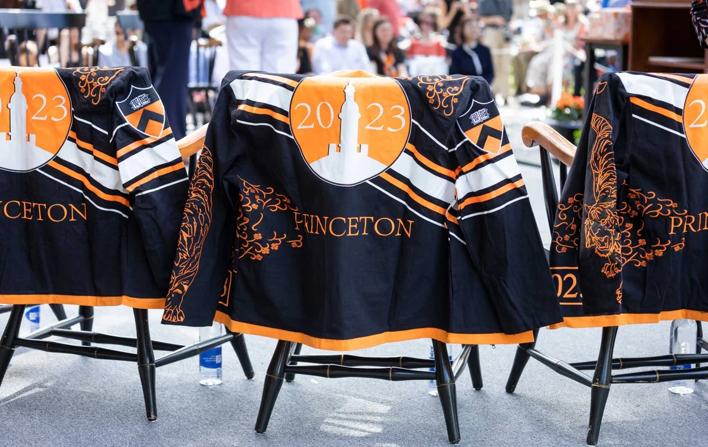
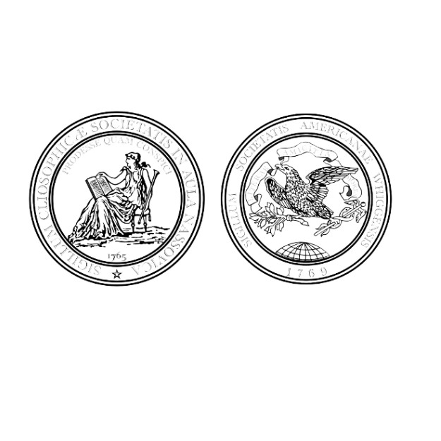
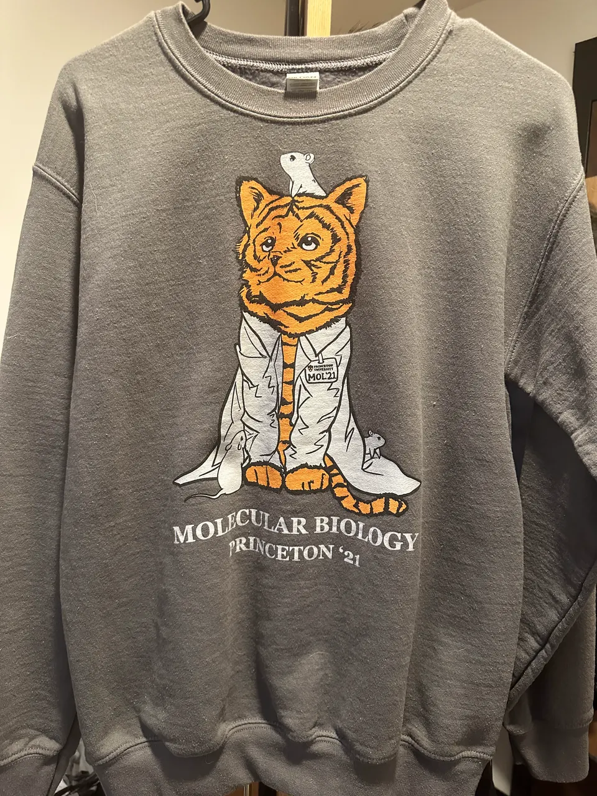
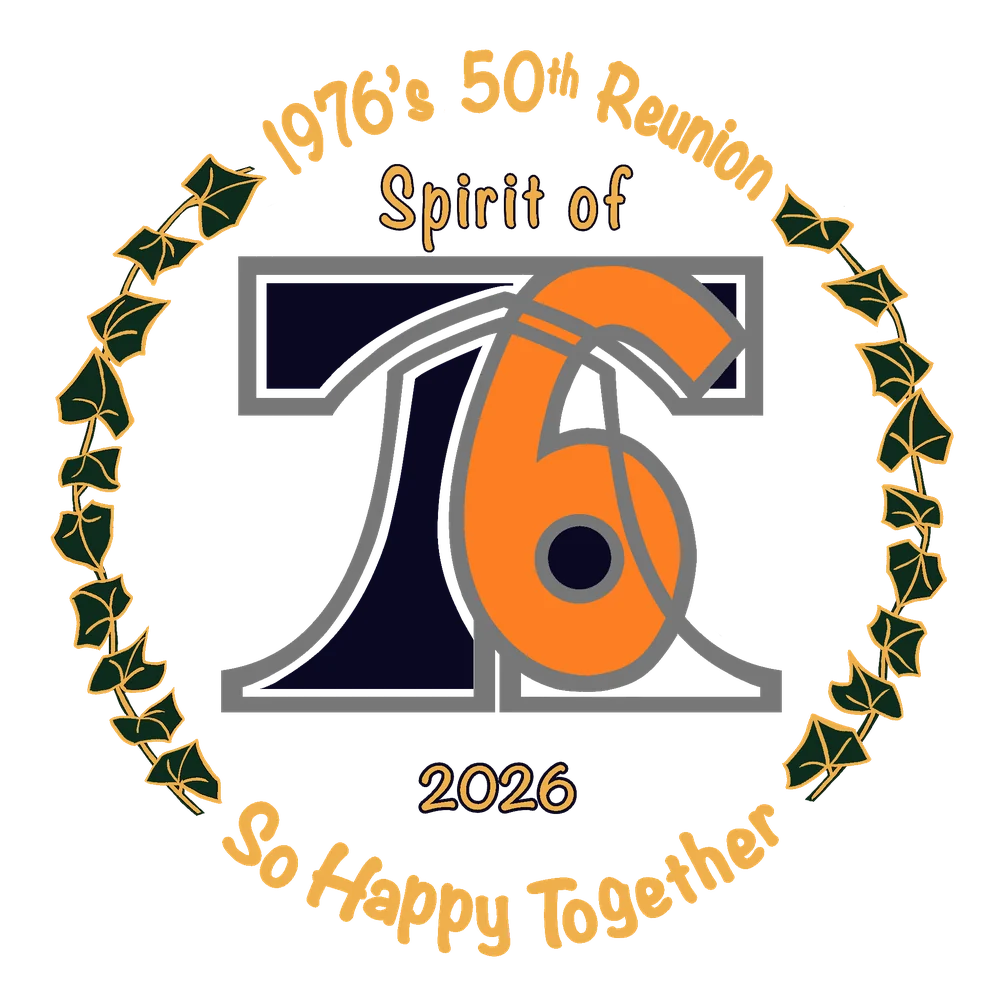
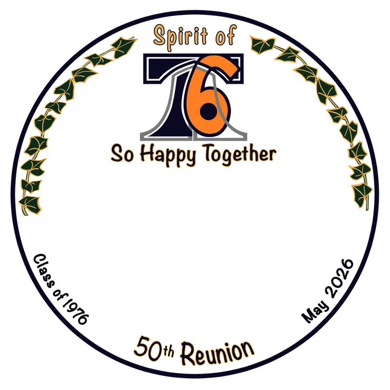
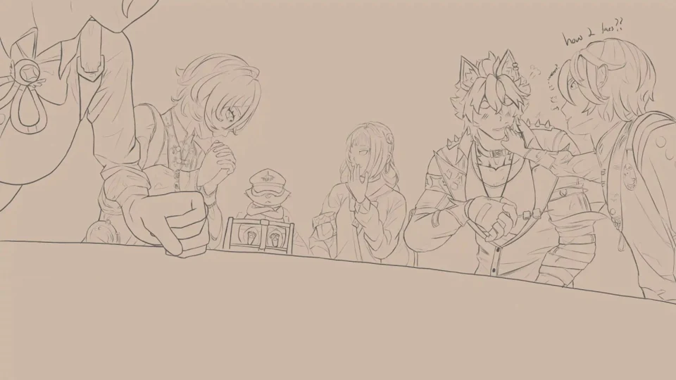
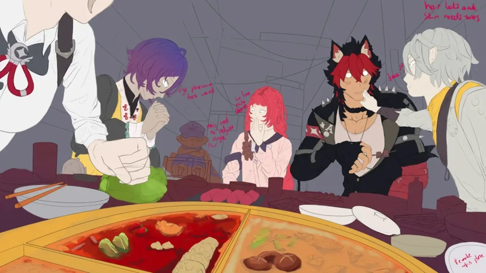
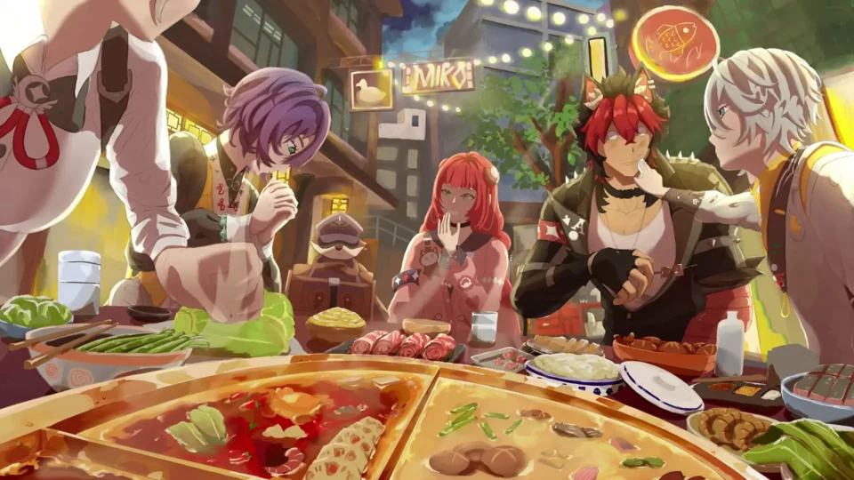
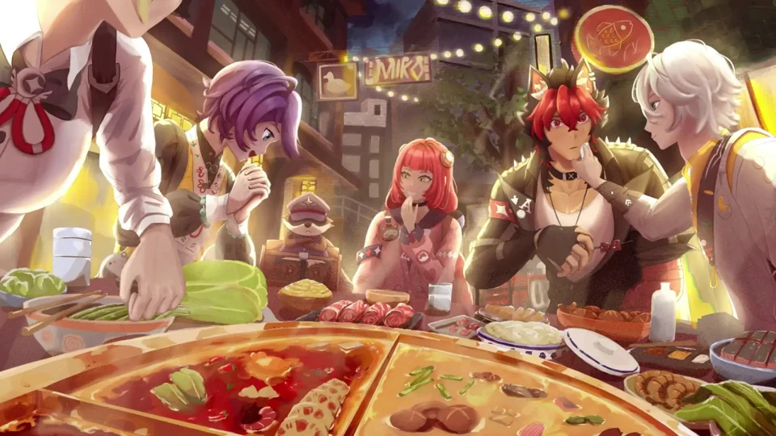

I came from a small, underresourced high school in rural Texas, and even when free tutoring was available, I didn’t use it. Now I tutor math, SAT prep, and academic writing. I try to help students become better learners rather than just getting them to the next test.
Trenton Arts at Princeton: fellow and visual arts co-lead
Princeton Online Tutoring Network: site coordinator
Scholars Institute Fellows Program: fellow, then head fellow
Princeton Computer Science: an intro Java and Python curriculum
✳ Why access matters to me
Silent clip from my working prototype. Sprites and environment art are third-party.
Combat AI in Godot 4
An ongoing prototype, built with AI-assisted development
The auto-battler genre felt stagnant to me, so I’m building a proof of concept for fighting AI that feels alive. Overlays show where a unit wants to stand and how it gets through the dungeon.
Whig–Clio wanted to use its seals on gear and prints, but the only images it had were badly degraded. With help from a Princeton librarian, I found the original seals, restored the lost detail, and made vector versions.
✳ The source and the restoration

Jackets at Class Day, May 2023. Photo: Denise Applewhite, Princeton University Office of Communications.
I wanted our year’s jacket to feel different from the ones I’d seen before. I developed the design with classmates’ feedback, and it won the class vote by a large majority.
The reunion committee gave me a hand-painted design. I turned it into vector artwork for banners, name tags, and signs, then made templates for jacket buttons.
During COVID quarantine, I drew a shirt concept for COS. It gave our scattered community something to be excited about, so I kept going with other majors, anonymously. Then I was asked to design the official Molecular Biology Class of 2021 shirt, which was printed for that year’s cohort.
As a head fellow, I drew graphics for SIFP, Princeton’s program for first-generation and lower-income students. The tiger is Princeton’s mascot, and the chicks are for SIFPeeps.
I use AI, and I want to keep learning how it can improve workflows and automate tedious tasks. The line I draw is when it starts to interfere with our curiosity and learning.
Why I still draw
I won’t use AI to generate my art. The skill of seeing, of discernment, is something I think we’re actively losing, along with our patience for nuance. Exploring why something is the way it is, at a fundamental level, is part of art. I won’t let a tool replace that, or my own growth.
The costs
I’m also worried about AI’s environmental costs and what it means for well-being, privacy, and jobs. That’s part of why I tried RWKV, a model built to use memory differently, to see what I could run on my own hardware. It’s an early experiment, not an answer to those concerns.
I want to be the helping hand I once didn’t know I needed.
Why access matters to me
I came from a small, underresourced high school in rural Texas. Classes came easily to me, and I assumed that students who struggled simply weren’t working hard enough. At Princeton, I encountered differences in preparation, resources, and guidance that changed how I understood academic success.
I was used to memorizing and reproducing the answers I thought were expected. Weekly readings and classroom discussion called for habits my schooling hadn’t developed. Even when free tutoring was available, I didn’t use it: I was accustomed to figuring things out on my own. Those experiences shape my commitment to making support accessible and helping students feel comfortable using it.
Why it matters now
Quality education keeps getting harder to come by as public schools lose resources and funding. Families who can pay for professional tutoring get ahead, and students without it keep getting left behind. I came from an underfunded school, so understanding students from every background matters a lot to me.
Tutoring that fits the student
I tutor math, SAT prep, and academic writing, and how I teach depends on the student. Some are ready to keep pushing into harder, newer topics. Others need repeated practice before they feel confident. Some already have a growth mindset, and some need more patience to get comfortable with not knowing something yet.
When a problem looks unfamiliar, we start with what we’re given and what we’re trying to find, and look for something we already know that might help. I try to help students become better learners rather than just getting them to the next test.
Arts education in Trenton
As a fellow and visual arts co-lead with Trenton Arts at Princeton, I met with a Trenton teacher every week. I helped get grant funding from Princeton for art supplies, and we painted murals in the school to bring more life to the halls.
Connecting families with free tutoring
As a site coordinator with the Princeton Online Tutoring Network, I recruited, trained, and matched volunteer tutors with students whose families could not afford tutoring. I also worked with community partners and supervised sessions.
Mentoring underclassmen
As a fellow and later a head fellow in the Scholars Institute Fellows Program, I mentored underclassmen from first-generation, lower-income backgrounds. We worked through course planning, degree progress, and financial aid, and I connected them with campus offices and support.
My priority in mentorship is helping people develop a sense of self and security. I want them to feel able to ask for help and explore what they want to pursue. Speaking openly and from the heart is part of how I try to offer that support.
Designing curriculum around students’ needs
At Princeton’s Computer Science Department, I worked with faculty to develop a 12-week introductory Java and Python curriculum with first-generation, lower-income students’ learning needs in mind. I facilitated workshops, gathered feedback, and revised materials for remote delivery.
I was brought on to fix accessibility issues in Rubrik’s web product. I had to learn the accessibility standards myself, and the work turned into a full audit of the front end.
What I found
Keyboard focus indicators were off, many elements weren’t labeled correctly, there was no color-blind mode, and a lot of components didn’t meet accessibility guidelines (WCAG). I logged every issue, wrote tickets with suggested fixes, and made many of the changes myself in React and TypeScript.
My role
I ended up doing consulting, QA testing, front-end development, and scrum master work. I also left documentation and an action plan so the team could keep going after I left.
Presenting it
At the end of the internship, I presented my findings to the whole company. I wanted them to see that accessibility is more than catering to a small group of users. Good accessibility is good, well-thought-out UX.
This is a summary of my contribution. Internal source code and project materials are not available in this portfolio.
My game prototype explores a combat system where training a unit affects its decisions, and players build skillsets that work together.
Why I started
I started this because the auto-battler genre felt stagnant to me. I wanted a proof of concept that complex fighting AI, while hard, is doable: units read a positioning heatmap and score their options instead of following a decision tree. The real challenge has been making them feel alive. They lean toward certain behaviors without being guaranteed to follow them, which plays very differently from a complicated finite state machine.
See the decisions
The prototype includes overlays for inspecting movement. These recordings show the existing systems running in the dungeon, with automatic movement active.
Choosing a fighting position. Scores update across the terrain for the highlighted unit. The white cross marks its current movement target; the map makes its preferences visible. Silent looping excerpt · starts in view unless reduced motion is enabled. Use the controls to pause.Mapping routes through terrain. The arrows show the exploration flow field across walkable rooms and corridors. The field remains visible during this fight; combat positioning adds separate decisions. Silent excerpt · play on request.
Two movement questions
Getting through a corridor and choosing where to stand during a fight need different information. The dungeon builds a distance field over walkable cells, then derives directions toward the exploration goal. Combat evaluates positions using the unit’s situation. Keeping both visible helps separate route problems from tactical choices.
Recorded from the ongoing Godot prototype. These excerpts demonstrate the diagnostic views, not a benchmark of optimal behavior. Game sprites and environment assets are third-party artwork; my contribution here is the system design and development process.
Choices in the system
Separate movement from skill selection. Each system can evaluate its own choices while sharing information about enemies and the unit’s available skills. Choosing an ability does not immediately redirect movement toward it.
Use scores to express preferences. Range, health, and available skills affect which actions look useful. This allows behavior to respond to the situation without assigning every unit a fixed class or script.
Make training affect consistency. The training-related Wisdom stat reduces noise in decision scores. Better-trained units make more consistent choices; ordinary units are not made perfectly predictable.
A concrete robustness problem
An ability that was still recharging could score higher than a ready one, despite a penalty. That left the unit idle for a decision cycle. The current implementation falls back to the best ready skill above a minimum score, so it can act without wasting an ability that has no useful target.
The distinction matters: a preference score describes how attractive an action is; readiness checks determine whether it can actually happen. Adding tactical options also means accounting for the ways those rules interact.
Innovation within practical limits
More complex behavior is only useful if it improves play. I’m still evaluating whether the decisions are readable, whether training feels meaningful, and which systems justify their complexity. A working prototype lets me investigate those questions; it does not settle them.
My role
I define the game design and system direction, direct AI-assisted development, and test and iterate on the prototype. It is an ongoing personal project, not a finished commercial release.
I’m interested in what AI makes possible, and I’m worried about its environmental costs and what it means for well-being, privacy, and jobs. Using it doesn’t make those worries go away.
A question I could investigate
That concern led me toward RWKV-type models and their different approach to memory. RWKV-7 uses a fixed-size recurrent state during inference. I wanted to explore what that could make practical on the hardware I had. Read the RWKV-7 paper.
What I actually tried
My early local experiment used the official RWKV-7 inference package. The test script loads a model, reports allocated and reserved CUDA memory, and inspects the model’s state interface. This is exploratory work with an existing architecture, not a new model I designed.
What remains unresolved
I’m interested in whether a hybrid approach could keep useful capabilities while easing resource demands. I haven’t built or benchmarked such a hybrid. Lower memory requirements alone would not establish lower energy use or environmental impact, and efficiency would not resolve the other concerns that brought me here.
A useful next step would be a controlled comparison of memory, speed, and output quality on the same hardware and tasks. For now, this project is an unfinished investigation.
Whig–Clio wanted to make gear and prints with its seals, but the images it had were badly degraded from repeated compression. The person helping with the gear reached out to me because the work was outside their expertise. I approached it as a digital restoration of historical art rather than a quick cleanup.
The source image

Before: the supplied image of both seals.
The restored seals
After: the Clio seal, with the seated figure.After: the Whig seal, with the bird.
Research before reconstruction
I spent time searching for the original seals and found them thanks to a Princeton librarian. They guided me as I restored details that had been lost over time.
A reusable result
I also made vector files, which will be far more usable long term than the old images.
Existing identity and iconography: Whig–Clio. Historical research, digital restoration, and vectorization: Michael Tran. The website displays optimized image previews of the original and restored work.
During COVID quarantine, I drew a shirt concept for COS. It gave our scattered community something to be excited about, so I kept going and made designs for other majors, anonymously.
COSAsleep on a laptop.ASTIn a space suit.CHMIn lab goggles.MAELifted by balloons.
MOL, the one that was printed
I was then asked to design the official Molecular Biology Class of 2021 shirt: a tiger in a lab coat, with mice. It was printed and handed out to that year’s cohort.
Original MOL artwork.

The finished Molecular Biology Class of 2021 sweatshirt.
For the Class of 1976’s 50th reunion in May 2026, the reunion committee gave me a hand-painted logo. I translated it into vector artwork that could be printed cleanly at any size.
The committee’s painting.My vector version.
Across the reunion

Gold letteringFor dark backgrounds.

Name tagRoom for each name.Jacket buttonAn engraving template.
What followed
I sent print-ready files to the University’s Reunions and printing offices. The vector file later let the class enlarge the logo for 16-inch P-rade signs. The committee also asked me for jacket button templates, and one organizer had me adapt the logo for her 50th wedding anniversary.
Original hand-painted design from the Class of 1976 reunion committee. Vector artwork by Michael Tran.
Graphic design / Scholars Institute Fellows Program
Tigers for SIFP
In the Scholars Institute Fellows Program (SIFP, now EBCAO), I mentored first-generation, lower-income underclassmen, first as a fellow and then as a head fellow. As a head fellow, I also made graphics for the program.
The tiger is Princeton’s mascot. The chicks are for SIFPeeps: peeps for people, and for the marshmallow chicks.
Asleep in a nest with chicks.For SIF Preview.Inside a laurel wreath.
I designed the Class of 2023 senior jacket, worn by classmates during Reunions. Orange tiger linework, ivy, and asymmetrical stripes connect the front, sleeves, and back.
Jackets at Class Day, May 2023. Photo: Denise Applewhite, Princeton University Office of Communications. View the original coverage.
Outside the box
I wanted our year’s jacket to feel different from the ones I’d seen before. I drew it on my iPad and asked classmates for feedback as it developed. My proposal pushed beyond the contest guidelines, and it ultimately won the class vote by a large majority.
The circle
I still have mixed feelings about the big circle on the back. My roommate liked it, and classmates’ feedback helped convince me to keep it. It became a compromise between the design I personally wanted and something the class would be excited to wear.
A short scene from my animated film, with a bright flower, small flying insects, and layers of dark foliage framing the clearing.
Six seconds from 1:48–1:54 in the final film.
A closer look
The orange flower is the focal point in a muted forest, and the dark leaves in front frame the clearing.
Over the rocks
Earlier in the film, water runs between the rocks while small spirits start to glow.
Eight seconds from 1:02–1:10 in the final film.
Near the end
A small creature waves from a stump.
A loop from 2:12 in the final film, cropped in closer.
Drawn in Procreate. Visual artwork, animation, and compositing by Michael Tran. The clips are silent loops. They start when they come into view unless reduced motion is on, and the controls pause them.
I drew this for the ZZZ 2025 Art Fest: the cast sharing hotpot on a busy street at night.
Why Zenless Zone Zero
In its early days, Zenless Zone Zero felt very artistic and pushed past conventional design. Its art contest, trailers, and event art felt like a love letter to artists, and at times they inspired me to keep going with my own art.
How it developed ✳
These frames come from my drawing timelapse. They show the figure drawing, color blocking, environmental detail, and lighting at different stages, including the working notes left on the canvas.

Figure drawingThe figures, poses, and shared table take shape in the line drawing.

Color blockingFlat colors establish the characters and food before the rendering develops.

Rendering the sceneThe street, food, and figures gain detail and a sense of volume.

Light and atmosphereWarm highlights and atmospheric light bring the separate elements together.
From drawing to color
An 18-second timelapse excerpt follows the early construction into color. The original recording includes layers being shown and hidden as the work develops. Silent excerpt · play on request.
Illustration by Michael Tran. Characters from Zenless Zone Zero.
Sweatshirt artwork for Scully, the Princeton co-op where I served as co-president. The cranes come from the paper ones that past members left hanging in our shared space.
Cooking for the house
Cooking for others was basically my hobby in university. I learned to bake new things for members and made cakes for their birthdays so they felt remembered. It was my break, and a way to support a community I loved.
The hard parts
Co-op life also meant learning what it takes to keep a shared home running. Some weeks I took on extra chores or filled gaps when things fell behind. That work was less visible than designing the sweatshirt or baking birthday cakes, but it was part of caring for the same community.
A wave-patterned skateboard design study. The full sheet places the board alongside a reference image and individual wave drawings, showing the pattern at different scales.
The reference print shown in the study is Katsushika Hokusai’s The Great Wave off Kanagawa. The complete sketchbook study is shown here.